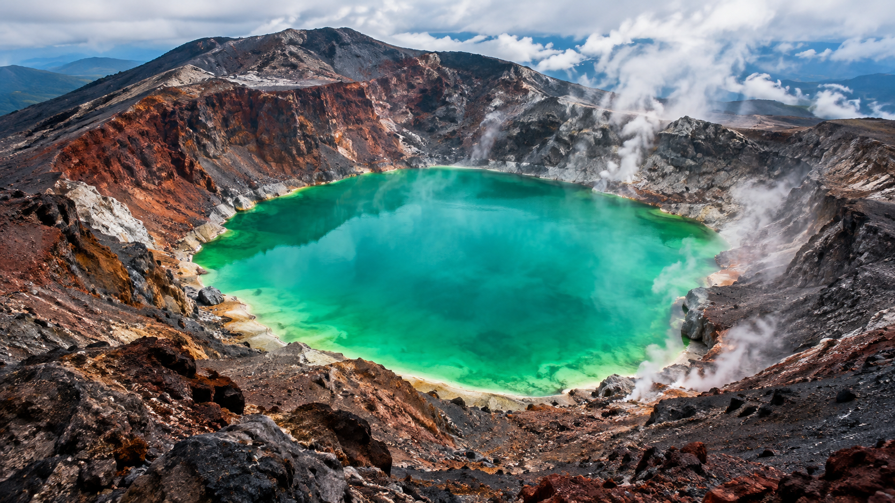
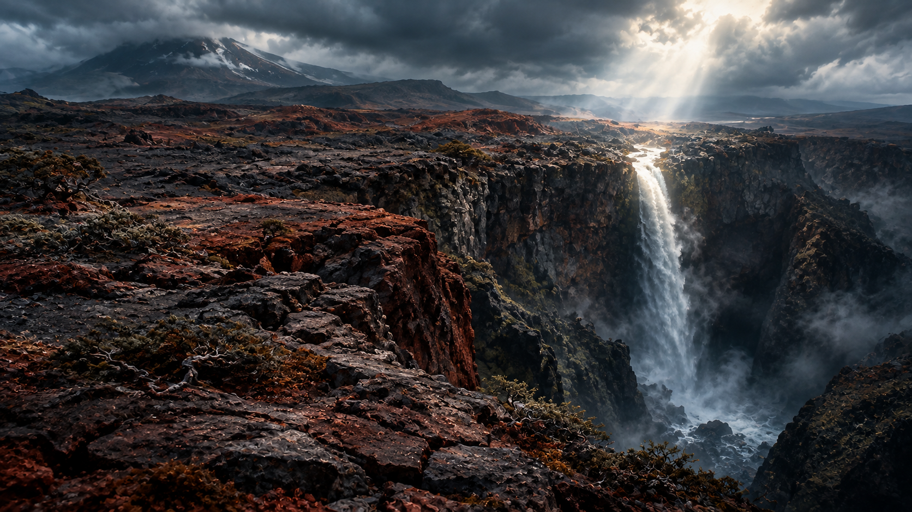
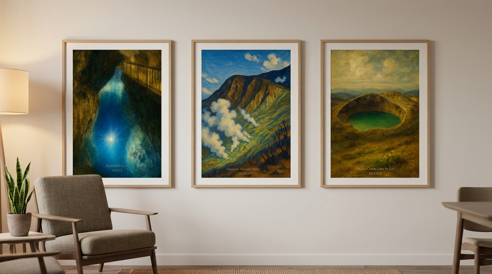

The Third Dragon Appears: Sari Meets Zao's Emerald Okama
Where fire and water finally meet
by Sari
Nya! Hi hi! Okay, okay, come here, come here — I have to show you something!
Wait, first — close your eyes for a second and remember with me. Remember the sleeping blue water dragon way down under Ryusendo Cave? And then the fire dragon, huffing and puffing white steam all over Owakudani? Kiri-neechan and I both agreed — "they're both so strong and cool!"
But but — what happens when fire and water, two things that should never meet, actually run into each other……?
Okay. Now open your eyes. Because that's exactly what this one is.
A Dragon Made of Both
This is it — the top of a volcano over 1,000 meters tall, and a miracle crater lake sitting right at the summit. Miyagi's Zao mountains, and its "Okama," the Iron Pot. Just look at that color — glowing emerald green, like a huge jewel dropped straight into the mountain.
Okay, but wait. Hold on a second. Apparently volcanic gas is still rising from the bottom of this lake, even now, and the water is so acidic that nothing can live in it at all. They call it a "witch's cauldron," and yeah — that scared me a little. No fish, nothing, not one living thing down there……
But you know, humans are funny creatures. Even in a "dead lake" like this, people have seen a water spirit living in it since ancient times — shaped like a serpent, or a dragon. There's an old story from a village up in northern Japan: during a drought, people would climb up and throw paper charms into the Okama, praying for rain, and a serpent-shaped guardian would rise from the water to fight over them — and then the rain would finally come. A dead lake, and yet a dragon god lives inside it who can bring the rain! A dragon housed deep in a volcano's belly, holding sacred water within it too — a hybrid god ruling fire and water at once. They say the way the lake's color shifts with the sun and the weather is this dragon's mood, a message sent up from the earth itself.

The third hybrid dragon, hiding in a witch's cauldron.
The Mirror, and the Falls You Can't Come Back From
This place was also opened long ago as a sacred training ground for mountain ascetics. They climbed all the way up here, praying that the gods and buddhas would reveal themselves on that clear, still water — so it was never just a pretty lake, it was a "mirror" connecting to another world entirely. Gods and buddhas reflected in the water……! I kind of hope it's a nice fish, if it were me.
But the sacred water overflowing from this dragon's lake doesn't stay calm forever. It runs down across a stark, barren lava plateau and falls — into what's called the "Falls of No Return." And legend says a terrifying witch used to live there, who caught the men climbing past and threw them into the pool below. Eek! A waterfall you can never come back from……! Honestly though, I don't hate that kind of dark, movie-like contrast between light and shadow. Kiri always says a scary story is exciting, and that's what makes it fun, so I guess I get it.
Come winter, when the summit gets sealed off by blizzards, the guardian spirit of the mountaintop shrine is said to travel down with its sacred body to the hot spring town below. And there's this idea too — seeing the barren rocky slopes as the earth's "eyelid," and the still, glowing water at the center as the earth's "eye." We think we're standing up there looking down at the Okama. But maybe, really, it's the earth looking up, watching the sky through us. That one's kind of a hard idea for me, but it feels really big and important, somehow.

The ascetics' mirror, and the falls where a witch is said to wait.
Which Dragon Would You Choose?
Ta-daa! Here it is — the art poster series built around all three dragons. Silent blue. Passionate red and white steam. And now this one, emerald, woven together from both fire and water. Three dragon stories, born from Japan's own wild nature, finally standing together as one whole series.
Can't decide which one to hang up? That's okay. This one, the "third dragon" — if you brought it into your room, it might just change your days a little, in a way you didn't expect. Kiri saw this poster the other day too, and she said this emerald green might actually have the power to change the air in a room.
A quiet water dragon. A fierce fire dragon. Or this mysterious third one, born from a meeting that should never have happened. Just take your time and choose the one you really want to live with. I'll be right here, watching quietly while you decide. Nya.

Silent blue, restless red, and emerald in between — which dragon would you welcome home?